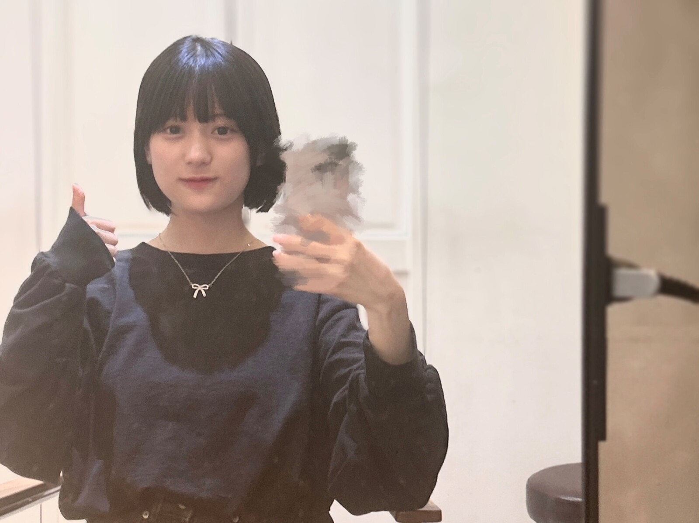

橘杏咲の立ち話もなんですから！ 第11回橘杏咲的“站着聊可说不完！” 第11回
皆さんこんにちは☔️🤍
大家好☔️🤍
6月になりましたね！いよいよ夏…！
进入6月了呢！夏天终于要来了……！
暑いのは嫌ですが、夏はテンションの上がるイベントがたくさんあるので嫌いにはなれないです。
虽然我很讨厌闷热，但夏天有好多让人情绪高涨的活动，所以我实在讨厌不起来。
でも、雨は嫌です！好きじゃない！絵文字は好きですけど！！！
不过，下雨天我可讨厌了！不喜欢！虽然雨伞的颜文字我还是很喜欢的!!!
夏ということは、夏休みも…まだまだですが…
说到夏天，那就意味着暑假也……虽然还早着呢……
今年の夏休みは何をしようかな〜！
今年暑假要做些什么好呢〜！
旅行、遊園地、フェス、。
旅行、游乐园、音乐节……
旅行へ行くなら弾丸になりそうだなぁと。
如果要去旅行的话，感觉又会变成特种兵式的闪电旅行了呢。
弾丸旅行好きなので、今回も友人をつかまえて行っちゃおーっと🎶
我很喜欢闪电旅行，这次也抓个朋友一起说走就走吧🎶
最近は、5月のコラムに引き続き、贅沢1人ご飯が盛り上がっています。
最近延续着5月专栏里的势头，我的“奢华一人食”热潮正高涨着呢。
ラーメン、ラーメン、パスタ、お米、肉✨✨
拉面、拉面、意面、米饭、烤肉✨✨
以前は1人でご飯食べるのが苦手だったのですが、最近は全くそんなことはなく、むしろ1人ご飯が日々の楽しみの一つだったりもします。
以前我其实不太擅长一个人吃饭，但最近完全不会那样了，反而“一人食”成了我每天的乐趣之一。
1人でまったり美味しいものを味わう時間、いいですよね〜
一个人悠闲自在品尝美食的时光，真的很棒呢〜
たまに美味しさを共有できる相手がすぐそばに居なくて寂しくなることはありますけど。
虽然偶尔也会因为身边没有能立刻分享这份美味的人，而觉得有点孤单啦。
以前と変わったことといえば、最近はぬいぐるみ可愛い可愛いが止まらないんです🧸♡
说到和以前相比的变化，最近我对着毛绒玩偶直呼“好可爱呀好可爱呀”的劲头根本停不下来🧸♡
昔はぬいぐるみ大大大大好きな妹に比べてあまり興味なくて、可愛がっていたのは唯一自分で選んだ、ぶたのぶーちゃんというぬいぐるみくらいだったんです。
小时候和超级超级超级喜欢玩偶的妹妹相比，我其实没太大兴趣，唯独疼爱过的，大概也就只有自己亲手挑的一只名叫“噗酱（ぶーちゃん）”的小猪玩偶吧。
お人形遊びもあまり興味なかったんです。
玩过家家娃娃我也没怎么上过心。
なぜかトーマスのおもちゃがお気に入りだった記憶…
印象里不知为何反而特别钟爱托马斯小火车的玩具……
あとはたまごっちくらい👀7月に新作が出るらしいので、しっかり狙っています。
剩下的大概也就拓麻歌子了👀听说7月要出新作，我已经牢牢盯上它了。
仲のいい友人何人かに「たまごっちやろう！」という文言にURLを添えて送りつけています。みんな〜一緒にたまごっちしようよ〜〜
我已经给好几个要好的朋友强行发去了“来玩拓麻歌子吧！”的留言还附上了商品链接。大家〜一起来玩拓麻歌子嘛〜〜
なので、最近…と言っても大学生になってから？
所以，最近……虽说是最近，其实是从上大学之后开始？
ぬい可愛い可愛いね。がすごいです。
“娃娃好可爱呀真可爱呀”的热情简直一发不可收拾。
最近はミーティアとナビーユのぬいがおうちに来て嬉しいです。
最近 Meteor 和纳比尤的毛绒玩偶也来到我家了，好开心呀。
これから色んなところに連れてってあげるからねぇ🥰🥰
以后姐姐会带你们去好多好多地方玩哦🥰🥰
あと最近は、イラストレーターのmikkoさんが描かれるキャラクターである「mikko characters」が大好きです。
还有最近，我特别喜欢插画师 mikko 老师笔下的角色系列“mikko characters”。
Xで知り、ガチャガチャでぬいぐるみを手に入れてからというもの、メロメロです。
在 X 上认识它们之后，自从在扭蛋机里扭到了一只玩偶，我就彻底被迷得神魂颠倒了。
ほんっとに可愛いんです！！！
真的实在是太可爱了!!!
みんな可愛いのですが、私の推しは子ねこのムースちゃんと子うさぎのキャミーちゃんです🐈🐇🤍
虽然每个角色都很可爱，但我的主推是小猫 Mousse 酱和小兔 Cammy 酱🐈🐇🤍
昔から1番好きな動物はうさぎですが、最近は意識しないとすぐにねこちゃんのグッズを買ってしまうので、今はうさぎとねこが同率で1番好きです。
从小我最喜欢的动物就是兔子，但最近一不留神就会顺手买下各种猫咪周边，所以现在兔子和猫咪并列第一喜欢啦。
私本当に「可愛い」っていう概念が大好きなんです。
我真的非常非常喜欢“可爱”这个概念。
日本の女性アイドルさんやアニメの美少女キャラクターたち、妹、うさぎやネコちゃん、ピンク色や金髪ツインテール、リボンに襟…私が可愛いなと思うもの全部が大好きでたまりません。
日本的女偶像们、动画里的美少女角色们、妹妹、兔子和小猫咪、粉色和金发双马尾、丝带还有衣领……凡是我觉得可爱的一切事物，我都爱得不得了。
「可愛い」という言葉自体は広義すぎるので言葉自体があまり好きではないのですが、「愛おしい」「愛らしい」みたいな…そんな存在全てが大好きなんですよね。
虽然“可爱”这个词本身的含义太宽泛了，我对这个词本身其实没那么感冒，但那种“惹人怜爱”“娇俏动人”的感觉……拥有这些特质的所有存在我都喜欢极了。
というものの、自分自身がその、可愛いと思うものを身につけたりするわけではあまりないんです。中学生の頃はフリフリのお洋服を着ることが多かったのですが、最近はあまり着なくなってしまいましたね。
话虽如此，我自己其实不太常把这些觉得可爱的元素穿在身上。初中的时候我经常穿带荷叶边的可爱衣服，但最近倒是不怎么穿了呢。
「可愛い」が好きすぎるあまり、「可愛い」のハードルが上がりすぎてしまっている節はあります。自分限定で。自分が可愛い洋服を着るなら、顔や髪の毛も自分にできる最大限まで可愛くしなきゃ！と思ってしまうので、時間のない朝には難しいんです。
或许是因为太喜欢“可爱”了，反而把“可爱”的门槛拔得太高了——仅限对我自己而言。总觉得既然自己要穿可爱的衣服，那妆容和发型也必须打理到我所能达到的极致可爱才行！所以在时间紧迫的早晨就很难实现啦。
なので最近は、可愛いを小物に纏わせています！！
所以最近，我都是把“可爱”寄托在随身小物上!!
さっきまでお話ししていた、mikko charactersのムースとキャミーのポーチや入れ物、ぬいぐるみにキーホルダー、それ以外の可愛いも日頃常備しています！
刚才提到的 mikko characters 里 Mousse 和 Cammy 的收纳袋、小盒子、玩偶和挂件，还有其他各种各样的可爱小物，我平时都是随身常备的！
可愛いに囲まれて幸せなんだぁ〜〜🫶🏻🌟
被可爱包围着真是太幸福啦〜〜🫶🏻🌟
声優というお仕事を通しても、たくさんの「可愛い」に出会えて最高にハッピーです。
而且通过声优这份工作，也能邂逅许许多多的“可爱”，简直开心到极点。
アイドルさんのお話はしたら止まらなくなるので、いつか、いつか、、
关于女偶像的话题一聊起来就根本停不下来，所以留到以后、以后有机会再说吧……
最近は「かわいい」が主題となっている曲が多くて嬉しいです。
最近以“可爱”为主题的歌曲好多呀，真让人开心。
ちょっと、可愛いというお題だけで無限に話せるので、一旦今回は可愛いテーマはここまでにします。
等一下，光是“可爱”这个题目我就能无限聊下去，这次关于“可爱”的话题就先到此为止吧。
まだまだ私の可愛いに対する解釈や想いが溢れて止まないので、また次回以降にお話しさせてください。
我对“可爱”的诠释与满腔热爱还源源不断地涌出来止不住呢，请务必让我留到下回以后再继续跟大家聊！
可愛いだけでも、ｲｲﾖ~！
就算只是可爱，也完~全~可~以哦〜！
(ド 黒髪ボブになった時のゆる〜い📷です。好きな女の子の髪型は、ハーフツインです。ボブは語感が好き。)
（这是剪成超级纯正黑发波波头时的随性自拍📷。我最喜欢的女孩子发型是半双马尾，至于波波头则是喜欢它念起来的语感。）

いつもは短めの前置きが本論みたいになってしまいました。
平时短短的开场白，结果写得跟正题一样长了。
可愛い論が止まらない。抑えて橘さん。
可爱论根本刹不住车。冷静点啊橘小姐。
最近のお仕事などについて、いつもより少しだけ簡単に触れていきますっ！！
接下来关于最近的工作等近况，就比平时稍微简短一点地聊聊吧!!
あっ、その前に。
啊，在那之前。
おなじみ結川のあさきさん、あさきタイムで毎回のように私のお話をしてくださっているんですよ。
大家的老熟人结川麻希小姐，几乎每一期《あさきタイム》里都会聊到我的事哦。
恥ずかしい、、、でも嬉しい。
好害羞啊……不过又很开心。
私の話しすぎ！って言ったら「だめ？」って言われたので、「いいよ」って言っちゃいました。
我跟她说“你也太常提我了吧！”，结果她问我“不可以吗？”，我就忍不住回了一句“可以啦”。
だめなわけないじゃん！！はぁ！！ねぇ！！😡
怎么可能不可以嘛!! 哈啊!! 真是的!!😡
でもあの人が話す私の言葉、少し結川からみた杏咲味が足されているんですよ！！あんなキュル~って感じで話してないですもん！！やってます。あれ。
不过那个人转述我说的话时，总会掺入一点结川视角下的“杏咲风味”!! 我才没有用那么娇滴滴的语气说话呢!! 她绝对是故意添油加醋的。
仕返しに、私はこちらのコラムで触れますからね。
作为回击，我也要在这篇专栏里写一写她！
なんかあさき、最近色違いのおもちゃの指輪をくれたんですよ。
说起来，麻希最近送了我一枚同款不同色的玩具戒指哦。
この間、私が少し落ち込んでいた時に、ちょっとだけでも会おうよ。とお互いのお仕事の合間の時間で会ったんです。
前阵子我情绪有点低落的时候，她说“哪怕就见一小会儿也好呀”，于是我们趁着彼此工作间隙见了面。
その時、ちょうど対みたいになってて可愛かったから、とか言ってニヤニヤ照れ照れしながら指輪をだしてきたんです。
那时她一边笑嘻嘻又有点不好意思地说着“正好凑成一对觉得很可爱嘛”，一边掏出了那枚戒指。
もう、気持ちは快晴ですよ。
我的心情瞬间就放晴成万里无云了呀。
快晴というか…ひだまりというか暖かい夕焼けというか…
与其说是大晴天……不如说是暖洋洋的向阳处，或者温柔的夕阳晚霞……
心身共にズーンとしていたのに、あさきのお陰で元気100倍になりました。
原本整个人身心都沉甸甸的，多亏了麻希，瞬间元气恢复100倍。
いつもありがとうね〜
一直以来谢谢你呀〜
ディズニーの時に買ったミスバニーととんすけの謎ペアキーホルダーと一緒に、キャミーちゃんの巾着につけました。
我把它和去迪士尼时买的邦妮小姐与桑普的神秘情侣款挂件一起，挂在了 Cammy 酱的束口袋上。
お守りにするね
我会拿它当护身符的哦
あ、あと最近よく、「激光It’s ME!」を聴いてるスクショを朝にラインで「今日もいちにち」って送ってきてくれてありがとうね。ま〜じで、嬉しい。よ！！！
啊，还有最近你经常大清早就在 LINE 上发你在听《激光It’s ME!》的截图，还配上一句“今天也要加油哦”，真的谢谢你呀。我真〜的超级开心。真的哦!!!
あ！ゲッコーといえば….皆さん！プリオケ！！見てますかぁ！！！👑🎶
啊！说到《激光》……大家！《Princession Orchestra》!! 都有在看吗!!!👑🎶
ついに、ミーティア変身しましたねぇ！！！！
Meteor 终于变身了呀!!!!
『激光It’s ME!』のフル、そして5話の特殊エンディングである「人生は流星だ☆彡」、聴いてくださりましたか！？？
《激光It’s ME!》的完整版，还有第5话的特殊片尾曲《人生は流星だ☆彡》，大家都有听了吗!??
ミーティアの明るさキュートさかっこよさがぎゅっと詰まってる曲たちですよね！！
这几首歌把 Meteor 的明朗、俏皮和帅气全都满满浓缩在里面了呢!!
『人生は流星だ☆彡』のフルは6/4(水）に発売されるキャラクターソングCDにて聴くことができるので、是非是非お楽しみに！！！💫
《人生は流星だ☆彡》的完整版可以在6月4日（周三）发售的角色歌 CD 中听到，请大家务必务必期待哦!!!💫
ミーティアの曲は他2人とはまた一風変わって、ミーティア節大炸裂という感じの楽曲なんですよね。全曲余すことなく大好きです！
Meteor 的歌曲风格和另外两位截然不同，是那种满满 Meteor 个人特色火力全开的感觉。每一首都毫无保留地超喜欢！
そして、最新8話。
然后，是最新播出的第8话。
ついにプリンセス3人の合唱曲がっ！！！！！！
终于迎来了三位公主的合唱曲!!!!!!
『TRIAD FORCE』カッコ良すぎますよね！！！
《TRIAD FORCE》简直帅爆了不是吗!!!
プリンセスとしての覚悟を決めた3人の決意が歌詞に表れていて、。、
三个人下定决心成为公主的觉悟全都融入在歌词里了……
とにかく、聴いてください。
总之，请一定去听。
アリスピアch ではアニメ本編内の歌唱シーン(歌アフレコ!)が投稿されており、フルバージョンは各音楽配信サービスにて配信されています！！
爱丽丝琵亚ch 上已经上传了动画正片里的歌唱片段（配音实唱！），完整版也在各大音乐流媒体平台上线了!!
とにかく、聴いてください。
总之，请一定要去听。
月末のプリンセスミーティングでは、その月のアニメの感想をオルケリアと皆さんでシェアすることができるので、最高の幸せ時間です。お便りやYoutubeのリアルコメントで、プリオケを見てくださっている皆さんとお話しできる時間、それが毎月…なんて良いんでしょう。
每月末的 Princess Meeting 上，我们 ORCHERIA 可以和大家一起分享当月动画的观后感，真是最幸福的时光。能通过观众来信和 YouTube 实时弹幕，和正在追看《Princession Orchestra》的各位畅聊，而且每个月都有……这也太美好了吧。
これからも、プリンセスMTGは毎月月末に定期開催されるので、皆さんの参加をお待ちしていますねっ！💌
今后 Princess Meeting 也会固定在每月末定期举行，期待大家的参与哦！💌
初めてのリリイベも楽しかった〜！！
第一次发售纪念活动也超级开心〜!!
5月は2回、リリイベがありましたね！
5月一共办了两场发售纪念活动呢！
『ゼッタイ歌姫宣言ッ！』と『君とつなぐオーケストラ』についてや、オルケリアについて、オーディションについてなど、私自身も初めて聴くお話しが沢山あって楽しかったです！！
聊到了《ゼッタイ歌姫宣言ッ！》和《君とつなぐオーケストラ》、聊到了 ORCHERIA、还聊到了试音时的往事等等，连我自己都是头一回听说的趣事也有好多，玩得超级尽兴!!
プリオケに、ミーティアに出会えて、本当によかったなぁ😌♡
能够遇见《Princession Orchestra》、遇见 Meteor，真是太好了呀😌♡
お見送り会やお渡し会でプリオケを観てくださっている皆さまと直接お話しできたのも嬉しかった〜！皆さんの愛を間近で感じました。ホクホク
在欢送会和手渡会上能和正在追看《Princession Orchestra》的各位面对面聊天我也好开心〜！近距离感受到了大家满满的爱意，心里暖烘烘的。
何度も何度も言いますが、これからのプリオケ、さらに面白くなっていきますし、沢山の個性豊かなキャラクターや素敵すぎる楽曲たちが登場し続けます。イベントも沢山ありますしね！
虽然我要反复说很多很多遍，但接下来的《Princession Orchestra》会变得越来越精彩，还会有许多个性鲜明的角色和绝妙动听的歌曲接连登场。线下活动也满满当当的呢！
なので！一瞬でも目を離したらあかんですよ〜！！
所以呀！一秒钟都不能移开视线、可不许走神哦〜!!
まだまだお話ししたいことはありますが、今回はこの辺で…
虽然还有好多想聊的事情，但这次就先写到这里吧……
最後に6月の目標を〜！
最后来公布6月的目标〜！
6月の目標はズバリっ！！！
6月的目标就是——!!!
『最強自己管理』
《最强自我管理》
です。最近ドタバタが続いていて心身のキャパを感じることが多いのですが、限界に至る前に自分で自分を守ることが大切だなと実感してます…
就是这个。最近一直忙得团团转，常常觉得身心快到承受上限了，也深切体会到在触及极限之前由自己来保护好自己有多重要……
自己管理は大事です。本当に。
自我管理真的很重要。发自内心的。
疲れがすぐに体調に出てしまうタイプの人間なので、風邪を引かないように徹底したいと思います。
我是那种一累就会立刻在身体状况上显现出来的体质，所以想彻底做好防护，绝不感冒。
R-1最高！R-1最高！R-1最高！！
R-1 最棒！R-1 最棒！R-1 最棒!!
ここまで読んでくださり、ありがとうございました！
非常感谢大家一直读到这里！
今月も元気に！頑張りすぎずにがんばりましょう〜！
这个月也要元气满满！不要太勉强自己，一起加油吧〜！
テーマや質問、感想などお待ちしております！！！💐
期待大家的主题建议、提问和感想哦!!!💐
ではっ
那么下次见啦
橘さんに質問！向橘小姐提问！
Q：これだけは譲れない！みたいな自分だけのこだわりってありますか？（千葉県・えーす）
问：请问您有什么“唯独这点绝不妥协！”之类的个人专属坚持吗？（千叶县·えーす）
えーすさん！ご質問ありがとうございます🥰
えーす！感谢你的提问🥰
そうですね…
让我想想……
あまりパッと思いつくこだわりはないのですが…やっぱり、うれしい日記でしょうか。
一下子倒不太想得起什么特别的讲究……果然还是“开心日记”吧。
うれしい出来事があったとき、うれしい言葉をいただいたとき、すぐに自分しかいないLINEグループに送ってます。これはもうずっと続けたいですね、。
每当遇到开心的事，或是收到让人高兴的话语时，我就会立刻发到只有自己一个人的 LINE 群里。这个习惯我真想一直坚持下去呢。
もう何年続いてるのか忘れましたが、そこそこに経ってる気がします！ログをみるとテンション上がるのでオススメです。
已经忘了坚持了多少年，但感觉过去了好一阵子啦！翻看聊天记录会让人心情大好，强烈推荐给大家。
あと、さっき本文でもお話しした、可愛いお洋服を着る時はヘアセットとメイクをしっっっっかりやる！！
另外，就是刚才正文里也聊到的，穿可爱衣服的时候一定要认认真真做好发型和妆容!!
これはこだわりというか、もうそうしないと着られない。という感じになっちゃいましたね！
这与其说是坚持，不如说已经变成“不做到这种程度就没法穿出门”的状态了呢！
でも可愛いお洋服を着るとテンション上がるし、幸せな気持ちになるので👗🎵
不过穿上可爱的衣服确实会让人情绪高涨、觉得超幸福👗🎵
な、なので早起きがんばって、準備の時間をたくさん取ります！！
所、所以我会努力早起，多留出充足的准备时间的!!